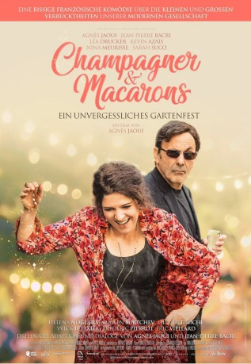

#10842 Champagner & Macarons - Ein unvergessliches Gartenfest
 
 IMDB-Wertung: 6.0 / 10
IMDB-Wertung: 6.0 / 10  Metascore: 0
Metascore: 0 
Castro war einst als Moderator im Fernsehen erfolgreich, doch seine Karriere befindet sich schon seit längerem auf dem absteigenden Ast. Als ihn sein Chauffeur Manu zur Einweihungsparty seiner langjährigen Freundin und Produzentin Nathalie bringt, die in ein schönes Haus vor Paris gezogen ist, trifft er dort auch auf Hélène, seine Ex-Frau und Nathalies Schwester. Die beiden teilten einst dieselben Ideale, doch während sie sich selbst stets treu blieb, stieg Castro der Ruhm zu Kopf und er wurde durch das Fernsehen nach und nach zum Zyniker. Außerdem auf der Party dabei ist Nina, die Tochter von Castro und Hélène, die ein Buch über das Leben ihrer Eltern geschrieben hat. Und so nimmt eine chaotische Feier ihren Lauf…
Jahr: 2018
Dauer: 98 Minuten
FSK:
Land: Frankreich Studio: Tiberius FilmTonspuren: DTS - ,
Untertitel: Deutsch,
Auflösung: 1080p (1920x808) Größe: 3696 MB
Genre: Drama, Komödie
Regisseur: Agnès Jaoui
Drehbuch: Jean-Pierre Bacri, Agnès Jaoui
Soundtrack:
Darsteller:
- Agnès Jaoui als Hélène
 Jean-Pierre Bacri als Castro
Jean-Pierre Bacri als Castro- Léa Drucker als Nathalie
 Kévin Azaïs als Manu
Kévin Azaïs als Manu Héléna Noguerra als Vanessa
Héléna Noguerra als Vanessa Miglen Mirtchev als Pavel
Miglen Mirtchev als Pavel Frédéric Pierrot als Jean-Paul
Frédéric Pierrot als Jean-Paul- Polydoros Vogiatzis als Invité
 Bernard Alane als L'interviewer radio
Bernard Alane als L'interviewer radio- Sophie Gibert als Une invitée
- Nina Meurisse als Nina Mareuil Castro
- Sarah Suco als Samantha
- Olivier Broche als Titi
- Mister V als Biggistar
- Eric Viellard als Vincent
 Grégoire Oestermann als Guy, l'agriculteur bio
Grégoire Oestermann als Guy, l'agriculteur bio- Sam Karmann als Mickey Bonello
- Michel Masiero als Monsieur Delavenne
- Olivier Doran als Thomas
- Serpentine Teyssier als Madame Bonello
- Marie Agnès Brigot als Madame Delavenne
- Florence Muller als La comptable
- Evelyne Buyle als Mme Chaulieu
- Lorram Jaoui als Ami de Biggistar
- Clark Ranaivo als Un ami de Biggistar
- Harmandeep Palminder als Un ami de Biggistar
- Wendy Nieto als Amie de Biggistar
- Lorranie Jaoui als Jeune
- Adèle Offret-Duhayot als Jeune
- Lena Hager als Jeune
- Tasnim Jamlaoui als Lou
- Eloïse Marcenac als Loulou
- Julien Sibre als Invité
- David Emmanuel als Invité
- Thierry Angelvy als Invité
- Mark Baris Sahin als Invité
- Manuel Guillot als Invité
- Fernando Fiszbein als Musicien guitare
- Roberto Gonzales Hurtado als Musicien guitare et voix
- Veronica Votti als Musicienne cordes
- Jean-Brice Godet als Musicien vents
- Brenda Ohana als Musicienne percussions
- Juliette Herbet als Musicienne contrebasse
- Véronique Berthoud als Invitée crémaillère
Datei: X:\2018(A-F)\Champagner & Macarons - Ein unvergessliches Gartenfest (2018, FSK, 1920x808).mkv seit 10.03.2019
Festplatte: HD 2017(A-Z)-2018(A-F)
 Es gibt insgesamt 151 Filme in der Gruppe '2018(A-F)'
Es gibt insgesamt 151 Filme in der Gruppe '2018(A-F)'